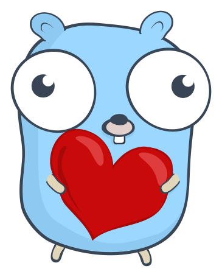
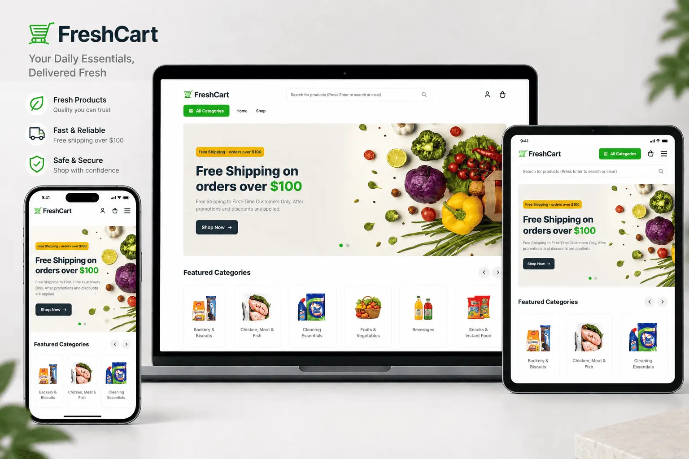
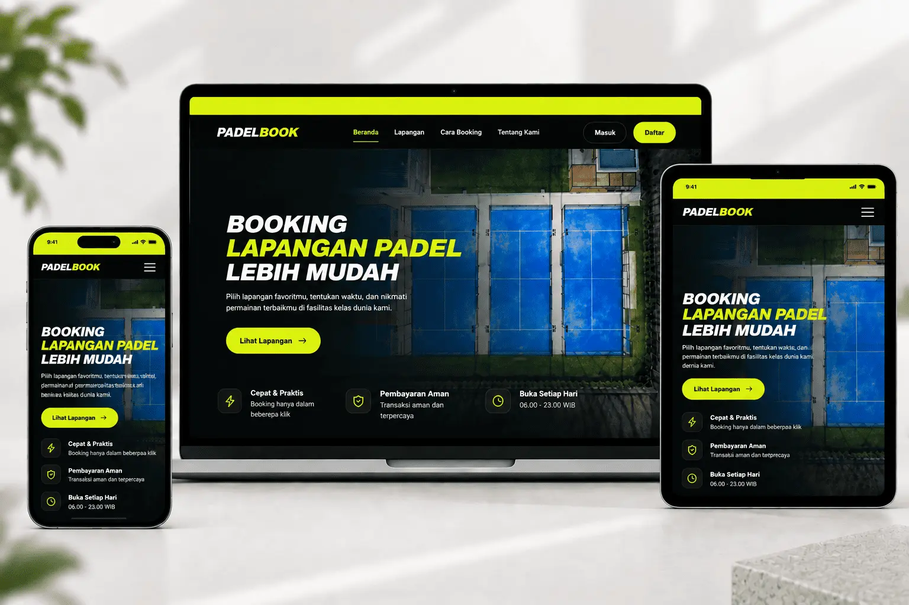
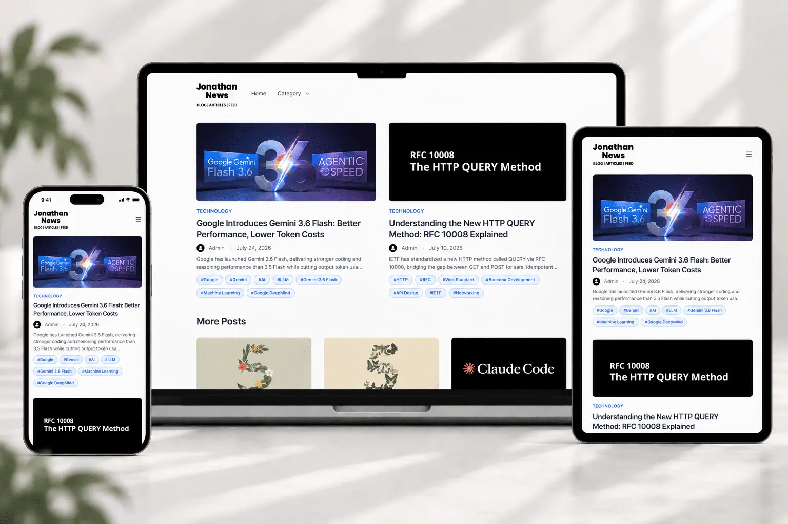
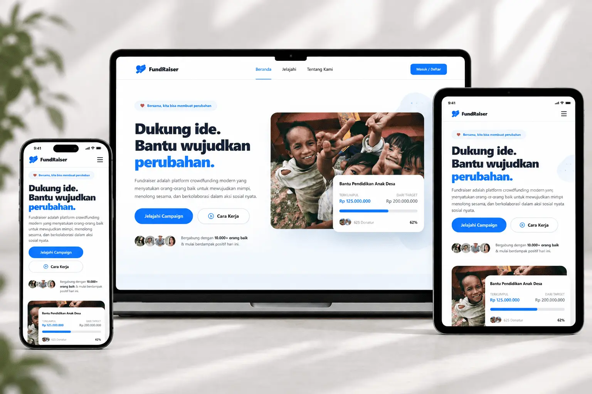

Contact
Let's build something.
I am always looking for new ways to grow and learn. I would love to connect, discuss tech, or collaborate on interesting backend projects.
Send an EmailComputer Science student based in Tangerang focused on backend engineering, distributed systems, and microservices using Go.

I am a Computer Science student focused on building efficient backend systems. My current journey involves mastering Go and understanding the core principles of software architecture.
I value a deep understanding of the foundations in every project I build. I enjoy exploring Clean Architecture and API design to create services that are reliable and easy to maintain.
Prioritizing readability and maintainability.
Focusing on idiomatic Go development.
Learning the foundations of scalable services.
Exploring distributed systems & infrastructure.
A collection of backend-focused projects exploring different architectural patterns and modern web technologies.

E-commerce marketplace with integrated admin dashboard and microservices.

Court reservation platform with admin dashboard and integrated payments.

News portal and CMS dashboard built with Go and Next.js.

Crowdfunding and charity donation platform with secure payments and campaign management.
I am always looking for new ways to grow and learn. I would love to connect, discuss tech, or collaborate on interesting backend projects.
Send an Email